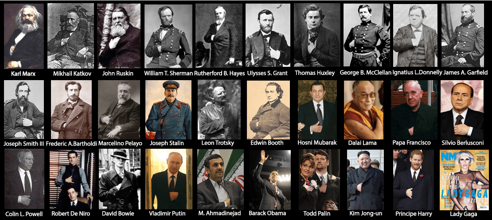
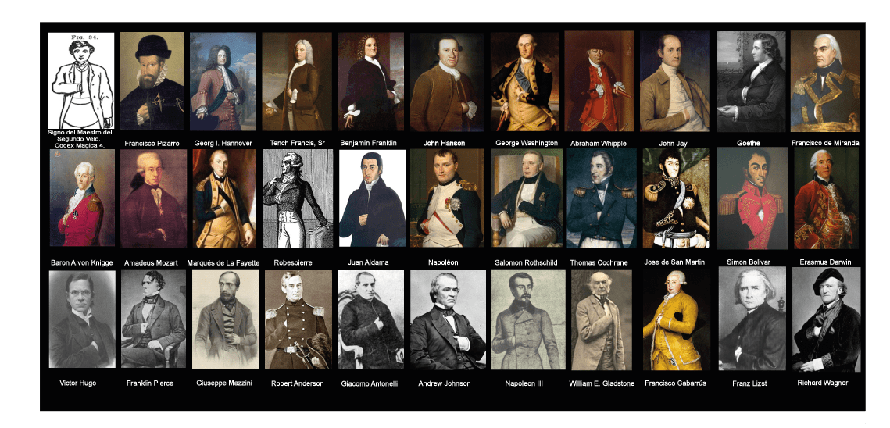
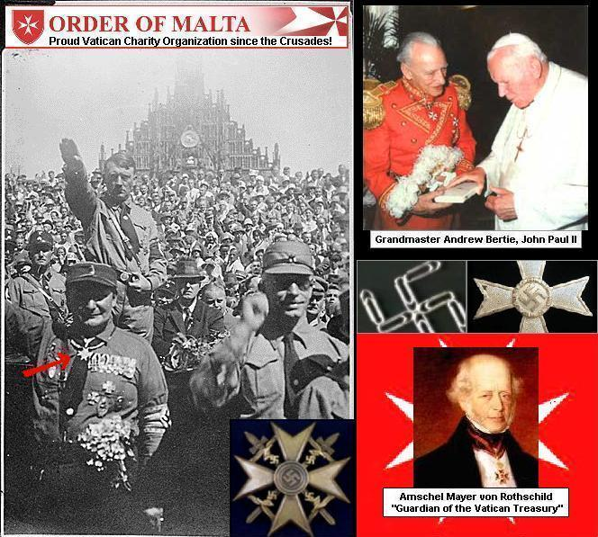
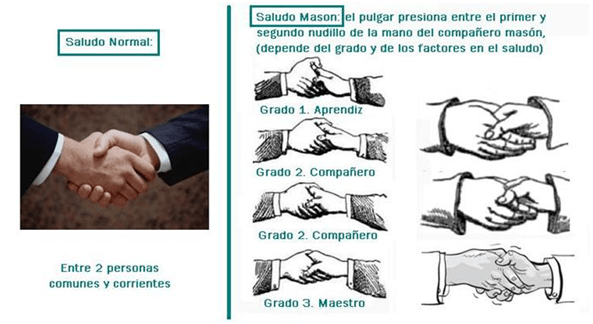
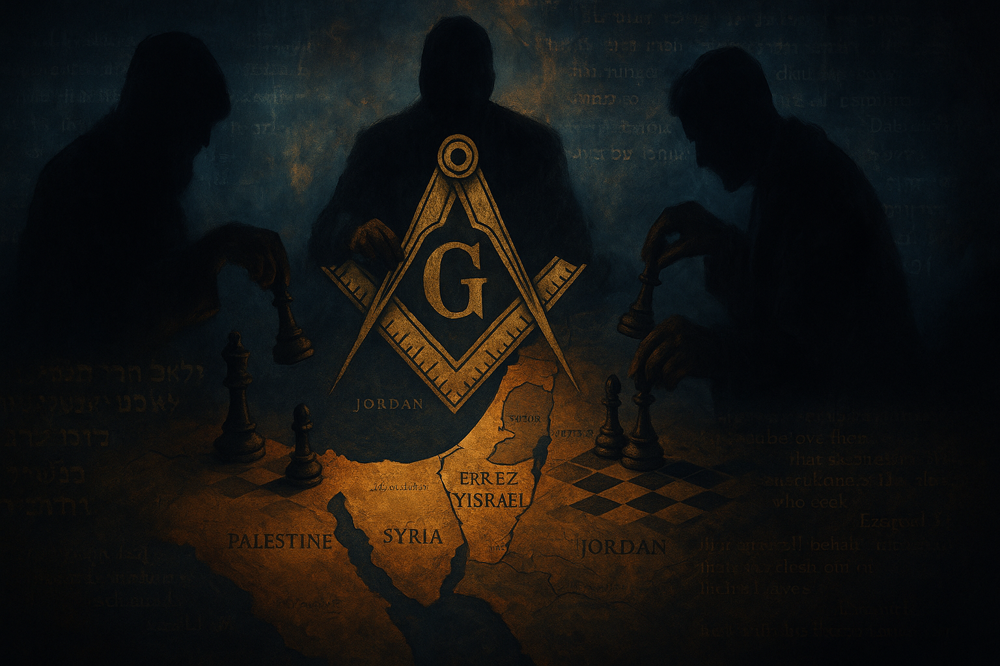

Introducción
El presente artículo ofrece un análisis escatológico basado en el capítulo 34 del libro del profeta Ezequiel, en el Antiguo Testamento, y lo aplica a una perspectiva contemporánea que alerta sobre la presencia de masones considerados "como el Señor me indicó, pastores impíos" gobernando Israel.Ezequiel 34 nos da la revelacion profética, los pastores de Israel han descuidado y explotado al rebaño, vendiendo su cuidado por ganancias personales y desentendiéndose de la protección verdadera de las ovejas. En esta línea, diversos escritores y fuentes que estudian la geopolítica de manera profunda sostienen que ciertos grupos masónicos, en combinación con redes templarias y criptocráticas, han influido poderosamente en la dirección política y espiritual del Estado de Israel como en los tiempos bíblicos antiguos registrado en los libros de 1 y 2 Reyes, 1 y 2 Crónicas entre otros.
A lo largo de las siguientes secciones, exploraremos:
- El fundamento bíblico de Ezequiel 34 y su mensaje escatológico.
- La identificación de los masones como "pastores impíos" conforme a lo que el Señor me indico, documentos históricos y y los que llaman conspirativos.
- Una síntesis de las pruebas documentales aportadas por estudiosos y periodistas alternativos.
- Implicaciones teológicas, políticas y sociales de esta lectura escatológica.
El propósito es ofrecer una visión integral, extensa y rigurosa desde la perspectiva profética, para que cada lector ore al Señor y pida dicernimiento de espiritual y comprenda esta interpretación, tal como plantea la advertencia de Ezequiel 34: "Cada uno acatará mi palabra o no, según corresponda a su conciencia" (Ezequiel 34:4).
Contexto Bíblico de Ezequiel 34
El Mensaje de Ezequiel 34
Ezequiel 34 forma parte del ciclo de profecías que denuncian la corrupción de los líderes de Israel, identificados como "pastores" que no han cuidado adecuadamente del pueblo-ovino. El profeta anuncia el juicio de Dios contra estos líderes, advirtiendo que:
"He aquí, yo contra los pastores; demandaré mis ovejas de ellos y no se alimentarán más. El pastor alimentará a sus ovejas, y no dejará que las descarriadas se reúnan; no buscará a las extraviadas, ni les seguirá hasta que las halle; no volverá con las que estén enfermas; ni apacentará a las que estén gordas." (Ezequiel 34:10-16)
Este pasaje denuncia directamente a quienes se aprovechan del pueblo-sacerdo, absorbiendo recursos para beneficio propio, mientras dejan a los más vulnerables a merced de peligros. La metáfora del pastor descuidado se extiende en el texto para describir el desamparo y la dispersión de la comunidad:
"Y buscaré la oveja perdida, y traeré de vuelta a la descarriada; vendaré a la herida, y fortaleceré a la enferma; pero a la gorda y fuerte destruiré, y apacentarlas bienias con justicia." (Ezequiel 34:16)
Finalmente, el capítulo culmina con la promesa de un Pastor Verdadero (interpretado tradicionalmente como el Mesías) que reunirá a las ovejas y las guiará con justicia, inaugurando un reino de paz y prosperidad.
Relevancia Escatológica
En la proyección escatológica judeocristiana, Ezequiel 34 se interpreta como un oráculo que encuentra cumplimiento en el "Pastor Supremo" que vendrá a establecer el reinado de Dios en plenitud. Sin embargo, también sirve como advertencia para las generaciones posteriores: siempre existirán liderazgos corruptos que traicionen la vocación de servicio. Por ello, muchos intérpretes ven en cada época histórica oportunidades de aplicación contemporánea, localizando "pastores impíos" en figuras políticas, religiosas o, en este caso, conexiones ocultas de la masonería en la gobernanza de Israel.
Análisis de los Masones como "Pastores Impíos"
Origen de la Interpretación Masónica
La masonería, surgida formalmente en la Inglaterra del siglo XVII, se ha vinculado históricamente con símbolos de construcción y perfección moral. No obstante, corrientes críticas y conspirativas la asocian con órdenes ocultistas más antiguas, indicando conexiones con los caballeros templarios y sociedades secretas europeas. Según estas fuentes, tales vínculos se remontan a la orden de Jacob Frank (siglo XVIII) y a la influencia jesuítica en ciertas logias laboristas sionistas, que presuntamente buscaban reinstaurar un "Reino Latino" de control político y religioso.
Una entrada enciclopédica en "Judaísmo Masónico" (Wiki) describe cómo figuras como Shimon Peres, Benjamin Netanyahu y Ehud Barak han sido acusadas de pertenecer a redes masónicas que, según posturas conspirativas, responden a intereses ajenos al bienestar genuino del pueblo judío (911: Judaísmo Masónico – Wiki) [esta información la puede hallar en el área o sección de sociedades secretas en The Babylon Matrix.
Los Masones Sionistas Laboristas
Documentos de la "Criptocracia Ocultista Ária" elaboran que el sionismo laborista masónico fue impulsado por el papado jesuita para servir a intereses europeos, no a los judíos de Israel. Se menciona que Theodor Herzl, considerado padre del sionismo, habría operado bajo la guía secreta de órdenes templarias-modernas, con el fin de restablecer el control templario en Tierra Santa en beneficio de la Iglesia Católica (El desastre del sionismo talmudista israelí – Hoffman) .El desastre del sionismo talmudista israelí: la conspiración de la criptocracia ocultista para destruir al pueblo judío • Documento en Mente Alternativa en sociedades secretas. En esta lectura, líderes como David Ben-Gurión o sus sucesores son descritos como peones de un plan mayor para someter espiritualmente a Israel.
Se acusa a estos masones laboristas de haber colaborado con agencias de inteligencia extranjeras (CIA y BND alemana, por ejemplo) para consolidar el Estado de Israel bajo un régimen criptocrático que favorece la "usura bancaria" y la "militarización del Talmud" como instrumentos de control social.
Conexión con la Masonería Moderna
En el documento "Judíos Racistas y Pro-Hitler" se exponen testimonios de rabinos de Yeshivot que, supuestamente, abrazan el supremacismo y promueven ideologías antidemocráticas, alabando a Hitler y la esclavitud de árabes (Rabinos de la yeshiva acogen el racismo, alaban a Hitler e instan a la esclavización árabe). Rabinos de la yeshivá acogen el racismo, alaban a Hitler e instan a la esclavización árabe.Documento en Mente Alternativa sección sociedades secretas. Aunque dicho texto se enfoca principalmente en el extremismo religioso ultranacionalista, se tiende a trazar un puente con la masonería acusada de adoctrinar en estos vicios, asimilando el misticismo racista con símbolos masónicos.
La masonería es descrita como un vehículo para propagar "enseñanzas talmúdicas sionistas" que justifican políticas de "castigo colectivo" y "colonización" del pueblo palestino, alegando que los masones "pastores" han desviado el propósito original de Israel (El desastre del sionismo talmudista israelí – Hoffman).
El Proyecto del Gran Israel y la Expansión Territorial
Recientemente, el artículo "Tel Aviv ha revelado sus cartas…" denuncia que el gobierno israelí, bajo la dirección de figuras masónicas, emprende la fase final del "Proyecto Gran Israel", con planes de limpieza étnica en Gaza y ocupación de territorios circundantes en Siria y Jordania (Tel Aviv ha revelado sus cartas – Panina) Tel Aviv ha revelado sus cartas, o el Proyecto Gran Israel está en marcha • Esto según el artículo en Mente Alternativa. En este contexto, los masones son presentados como estrategas que hacen realidad la profecía de Ezequiel 34: dispersan al rebaño palestino y alimentan sus propios intereses geopolíticos.






Evidencias Documentales y Testimonios
Informe "911: Judaísmo Masónico"
El artículo "Judaísmo Masónico" (Wiki) argumenta que Shimon Peres, Benjamin Netanyahu y Ehud Barak formaron parte de una red masónica laborista que respondía a órdenes jesuíticas. Esta fuente sitúa a los masones como "pastores impíos" que se beneficiaron del establishment israelí, subrayando que:
- Fueron guardianes de "usura bancaria" y "criptocracia" en beneficio del papado.
- Manipularon el respaldo diplomático de potencias occidentales a cambio de privilegios económicos.
- Patrocinaron la persecución interna de opositores ideológicos (revisionistas sionistas liderados por Vladimir Jabotinsky) para consolidar su hegemonía.
Según esta visión, su influencia se extendió desde las finanzas hasta la estrategia militar, marcando la agenda oficial de Israel como una fachada para sus propios designios.
El Artículo de Mente Alternativa: "El Desastre del Sionismo Talmudista"
Michael Hoffman, historiador en análisis geopolíticos, detalla en su obra cómo una "criptocracia ocultista aria" impulsó el sionismo militarizado como estrategia para destruir al pueblo judío desde adentro. Entre los puntos principales se destacan:
- Militarización del Talmud: La reinterpretación de textos rabínicos para justificar la violencia y el castigo colectivo contra poblaciones árabes.
- Supremacismo Religioso: Rabinos como Yitzchak Ginsburgh y Od Yosef Chai desarrollaron escuelas y pseudocolegios que enseñan la "superioridad de la vida judía" y autorizaron el asesinato de no judíos. Estas enseñanzas habrían alimentado la mentalidad expansionista de colonos en Cisjordania (El desastre del sionismo talmudista israelí – Hoffman) .El desastre del sionismo talmudista israelí: la conspiración de la criptocracia ocultista para destruir al pueblo judío, DOCUMENTO EN Mente Alternativa .
- Conspiración Internacional: Se alega colaboración entre agencias estadounidenses (CIA), alemanas (BND) y redes templarias para financiar y armar al aparato militar israelí, en detrimento del bienestar genuino de la población israelí y palestina.
Por esto el Señor me ha mostrado estos "pastores impíos" replican la conducta denunciada en Ezequiel 34: alimentarse a costa del rebaño, dispersarlo y traerle "heridas" que luego se niegan a sanar.
Testimonios de Rabinos Extremistas
El informe periodístico "Rabinos de la yeshiva acogen el racismo…" revela grabaciones de instructores pre-militares que:
- Exaltan a Hitler y promueven el racismo como "verdad divina".
- Defienden la idea de la "esclavización de los árabes", considerándolos inferiores genéticamente.
- Justifican el asesinato de civiles en Gaza como "nefasta pero necesaria misión" para la supervivencia judía (Rabinos de la yeshiva acogen el racismo – Canal 13) [oai_citation:5‡Rabinos de la yeshivá acogen el racismo, alaban a Hitler e instan a la esclavización árabe.pdf](file-service://file-QeS7wYCZ8BasDZRm8dXxMZ).
Estos testimonios revelan un adoctrinamiento ideológico que, según críticos, estaría siendo promovido desde logias masónicas que operan en la clandestinidad, alineadas con la "Criptocracia Ocultista Ária".
Documentos de Mente Alternativa: "Proyecto Gran Israel"
Elena Panina denuncia que la política oficial israelí, avalada por redes masónicas, se basa en una "expansión territorial" para establecer un Estado que abarque Palestina, Jordania y partes de Siria. Tal proyecto implicaría:
- Limpieza Étnica en Gaza: Desplazamiento forzado de la población palestina sin posibilidad de retorno (Tel Aviv ha revelado sus cartas – Panina) [oai_citation:6‡Tel Aviv ha revelado sus cartas, o el Proyecto Gran Israel está en marcha • Mente Alternativa.pdf](file-service://file-Kty1s1XBe5pkcidMxQxU5D).
- Presencia Militar Prolongada: Con bases permanentes en territorios fronterizos sirios y jordanos, asegurando el control estratégico de la región.
- Respaldo Internacional Encubierto: Corea de poderes aliados (EE. UU., Reino Unido, Alemania) proporcionaría apoyo logístico y diplomático a cambio de concesiones económicas y de inteligencia.
La correlación de estos planes con la denuncia bíblica de "pastores impíos" resulta el fundamento profético que conecta Ezequiel 34 con la interpretación contemporánea de estas redes masónicas.
Implicaciones Teológicas, Políticas y Sociales
Advertencia Profética y Escatología
Desde la perspectiva escatológica, Ezequiel 34 advierte que Dios intervendrá contra aquellos que han abusado de su autoridad. En la actualidad, los masones acusados de "gobernar impíamente" serían objeto de juicio divino:
"Y yo apacentaré mis ovejas, y yo las haré yacer, dice Jehová el Señor. Yo buscaré a la oveja perdida, y traeré de vuelta a la descarriada; vendaré a la herida, y fortaleceré a la enferma; pero a la gorda y fuerte destruiré; apacentándolas con justicia." (Ezequiel 34:15-16)
La promesa del "Pastor Verdadero" implica que el reinado del Mesías purgará estas corruptelas, restaurando la justicia en Israel y reconociendo la dignidad de cada oveja, israelita o palestina.
Repercusión Internacional
Si se adoptan las premisas conspirativas descritas, significaría que gran parte de la política exterior israelí responde a intereses masónicos ocultos que socavan la convivencia regional. Esto implicaría:
- Deslegitimación del proyecto sionista a ojos de creyentes que toman Ezequiel 34 literalmente.
- Rechazo de la narrativa oficial que habla de "democracia" y "pueblo electo", al considerarla fachada ideológica de intereses templarios y jesuíticos.
- Potencial radicalización de movimientos religiosos y políticos que defiendan a ultranza la soberanía bíblica de Israel, confrontados con sectores laicos y progresistas.
Impacto Social en la Diáspora Judía
Las acusaciones contra masones prominentes han generado polarización en comunidades judías fuera de Israel. Algunos ven en esta denuncia un llamado profético a la conversión y al arrepentimiento, mientras que otros lo consideran antisemitismo disfrazado de profecía.
Organizaciones judías en Estados Unidos, Europa y América Latina han reaccionado de diversas maneras:
- Líderes Reformistas: Ofrecen programas de reconciliación interconfesional, rechazan tesis conspirativas pero reconocen la necesidad de cuestionar la corrupción política.
- Sectas Evangélicas y Carismáticas: Ven en Ezequiel 34 la confirmación de su visión escatológica, responsabilizando a líderes judíos sionistas de no atender el llamado mesiánico.
- Comunidades Judías Ortodoxas: Mayoritariamente rechazan las acusaciones, argumentando que la masonería es una entidad profana que no puede gobernar Israel y consideran estas lecturas una tergiversación histórica.
Conclusión: ¿Aceptación o Rechazo?
Ezequiel 34 plantea una pregunta fundamental: "¿Quién cuidará verdaderamente de las ovejas?" El análisis extenso presentado en este artículo invita a cada lector a examinar:
- La veracidad y el peso de las pruebas documentales que apuntan a una influencia masónica oscura.
- La coherencia de estas teorías con el texto bíblico y el contexto histórico de Israel.
- La responsabilidad ética de denunciar a "pastores impíos" o, por el contrario, discernir entre profecía y conspiración.
Al igual que en tiempos del profeta Ezequiel, hoy existen escuchas atentas que exigen rendición de cuentas a los líderes espirituales y políticos. Si realmente "los masones impíos gobiernan Israel", no cabe otra respuesta que la intercesión y el juicio divino prometido en Ezequiel. Sin embargo, cada lector deberá contrastar estas acusaciones con fuentes académicas, creencias personales y, sobre todo, con el mensaje central de la Escritura: el llamado al arrepentimiento y la búsqueda de justicia.
— Fin del Reportaje —